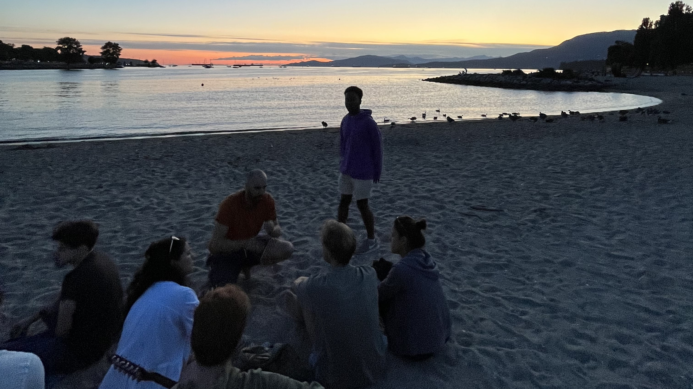
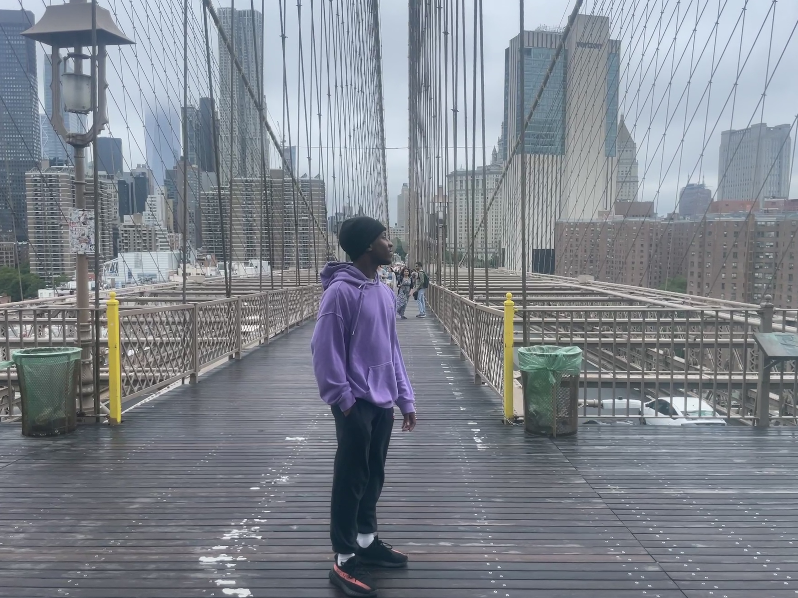
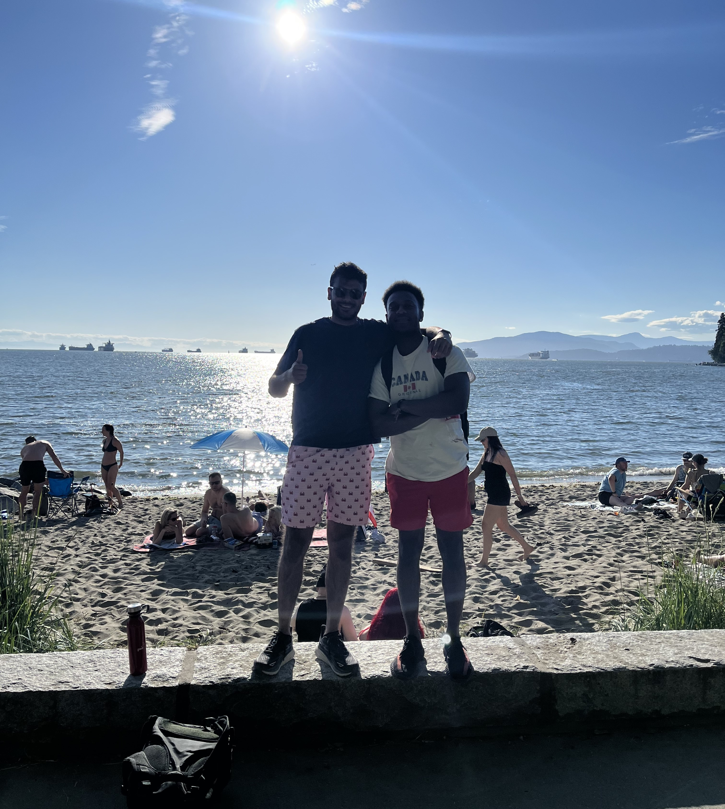

Decy 08, 2023

Answering the classic ‘How was your holiday?’ question often propels me into a contemplative state. There is a breadth of directions you can take this answer to – from where you stayed, what you ate, the activities you did, the cultural differences, the weather, nightlife, etc.
I slightly pause and wonder, ‘Okay, where do I begin?’. Oddly enough, in 2023, the frequency of this question seemed to increase.
It’s surprising because I travelled to six countries in the preceding year of 2022 – Germany, The Czech Republic, Austria, Croatia, Jamaica and Albania.
Not to mention, I was juggling my final year of university, graduating in July, and transitioning into a fully-fledged corporate role in September. Thus, I welcome you, dear reader, to my first travel blog, a chronological virtual journey of my adventures in 2023.
The website has been designed by a developer from HTML5 UP.
This website is being used to practice my Azure DevOps skills by creating a WebApp.
Feby 28, 2023

Even though I’d been to France before on a battlefield trip, I had never been to Paris. Any major European city is at the top of my travel bucket list, except for Moscow, and I couldn’t miss the opportunity to go when my dad mentioned he was going as part of a work trip in February. I extended an invitation to myself so I could stay at his accommodation for free, do some solo sightseeing during the day, and then catch up with him for dinner and explore some more sights once he wrapped up his work. This trip allowed me to save on accommodation costs and meant I only had to fund my spending money and travel to Paris.
As a frugal university student reluctant to work more shifts in my final year, I took the Flixbus from London to Paris. I had a voucher from a cancelled trip last year which I could use, lowering the price of the bus from £40 to £8 one way. Contrary to belief, the Flixbus was more comfortable than any plane ride I’ve *currently* been on. The coach was half full, and I could enjoy the luxury of not being seated next to anybody, allowing me to put my feet up to sleep more comfortably. The journey took 8 hours, but it felt no longer than 5. Furthermore, there was no messing around with security checks and waiting at an airport gate.
We stayed in Paris for two nights, so travel between the famous sites and museums was constant. My itinerary included visits to the Arc de Triumph, the River Seine, the Louvre, Opera Garnier and, of course, the famous Eiffel Tower. The Louvre was the most surprising place I went to. The architecture of the museum was captivating. The designs reminded me of the ‘old’ money aesthetic I see on TikTok, and I realised I was in the biggest museum on Earth when I got lost trying to look for the Mona Lisa. An honourable mention goes to the ‘Galeries Lafayette’, an eight-story shopping mall in the centre of Paris. It offers a free observation deck of Paris, where you can see the Eiffel Tower from a distance.
I’ve heard many bad things about Paris: there are rats and garbage everywhere, it smells terrible, the people are rude, etc. However, my personal experience over a 2-night stay defied these expectations. Perhaps because I only stayed for two nights or I listened to music most of the time travelling between landmarks? My curated Paris playlist became integral to my journey. Notably, the playlist had to feature the iconic song by Kanye West and Jay Z. If I were to revisit Paris, I would probably struggle to find new things to do that would interest me. After all, I am not very interested in history or art museums. I prefer the outdoors and doing activities. Although, that does not negate the memorable experience I had.
Juny 21, 2023
New York was a familiar destination that I had been to before. It was just over five years since my first visit, and I was itching to go again after Miss Pat offered me a place to stay while I was there. Miss Pat is a close family friend who sees me as a grandson. On my last visit, I only went for 3 nights. Therefore, I could check off the things I didn’t do on my first trip on this second trip. In January, a random thought came into my head: ' If I’m going to New York, why don’t I visit Vancouver too whilst I’m on that side of the world?’ By then, I will have finished my degree, and in the meantime, I’ll have something extra to look forward to while I study.
I’ve always wanted to visit Vancouver. Why? Simply because it is multifaceted. It is a metropolitan city, has plenty of beaches, and is within close proximity to the mountains. The population is diverse, and Canada’s 2021 census confirmed that 41% of Vancouver’s population were foreign-born immigrants.
My main concern was who I could convince to come with me. If I were to invite anyone to New York, I would have to go by Miss Pat first, and I’m not sure how she’d feel with a stranger staying at hers for a week. Convincing someone to come along to the Vancouver leg of the trip seemed exhausting. Who can I convince to purchase a £600 return flight ticket to meet me in Vancouver? This wouldn’t include accommodation and spending money in one of the most expensive cities in North America and Earth. Though I did float the idea around a few friends, I never formally asked anyone. Ultimately, I decided this would be my first solo trip.
Was I nervous going by myself? Not really. I like to use the phrase ‘Kobi taught me’. Kobi is a good friend of mine from Florida. We met at a hostel in Ibiza in 2021 towards the ‘end’ of the pandemic. I joined Kobi on his Europe interrailing trip in 2022, travelling to Berlin, Prague, Vienna and Split. He was travelling for months, but I could only join for 10 days as I was in the middle of my placement year at university. I also visited him later that year whilst he lived in Albania. We have very different travel styles: he likes to see all the museums whilst I prefer to do outdoor activities and spend more time at famous landmarks. Perhaps half of our time on that trip was spent apart, which got me used to solo travel. Like Kobi, any fan of Kanye West would also recognise the phrase from the song ‘Blame Game’.
New York

New York is best known for booking things in advance. Firstly, it’s cheaper, you won’t have to spend as much money once you’re there, and it guarantees a place in your activities. I reserve my allowance for public transport, food, last-minute activities, and gifts when I’m there. Looking at menu prices, you often think, ‘Wow, that’s not too expensive for New York’. Don’t be fooled! You still have to pay the tax rate they don’t include in their menu prices. Also, it’s recommended to adopt the country’s customs and tip the service workers.
En route to New York, I flew with British Airways – my favourite airline. My flight was initially booked for 3 PM from Gatwick Airport. However, my plans took an unexpected turn when I received a text on the morning of the flight saying my flight was cancelled. Nevertheless, I was rebooked onto the next flight departing Heathrow Airport. As a result, I would arrive in New York just over 3 hours later in the late evening instead of the afternoon. I was unfazed. The delayed flight meant an opportunity to claim compensation. Later, I would receive a reward of £420 from British Airways in October for the delayed flight. Moreover, this was the same morning I discovered I had earned a first-class degree in my studies at university.
Topaz is a longtime friend who works for a famous airline operating in the UK. She had recommended that I gift the flight attendants some chocolates/sweets as a goodwill gesture. I decided to gift the team a box of celebrations. In return, the team were very grateful. They gave me a glass of champagne before I sat down and even upgraded me to premium economy. I do this every time I fly now.
Throughout 2023, I was able to save spending money for the trip and pre-book activities. The website I use to book activities is called ‘GetYourGuide’. It offers vast amounts of activities in destinations across the globe. Plus, I can collect Avios on each pound spent on their website (this is not an ad, but if anyone from GetYourGuide is somehow reading this, please sponsor me). When searching for activities in New York, there were day trips that came up in Washington, DC and Philadelphia. Without hesitation, I booked both trips and made it my mission to visit as many cities as possible.
Despite not being interested in history museums, both cities offered great insights into American history. Also, I was able to check off some major landmarks such as The White House, Lincoln Memorial, Washington Monument, and the Liberty Bell. While I felt satisfied with a one-day trip to Philadelphia, I felt like another trip to Washington, DC, was needed. PS No one points out how humid Washington, DC is. A common myth is that it was built on a swamp. Finally, I checked out the main sites I had been to previously and the ones I missed. These include Central Park, the High Line, Times Square, The Edge, and Brooklyn. I also saw Dominic Fike at a meet and greet and ran into Lovell Adams-Gray, an actor from the Power 2 Series: Ghost.
July 30, 2023

Paris was the first destination I travelled to this year. I was really excited because it is one of the most famous cities
in the world and I’ve always wanted to cross this off my destinations I needed to go to. This trip came about when my dad was visiting Paris on a work trip.
He usually does them across the UK but this was the first time in Paris. Since I knew he was able to book a double room for his overnight stays, I asked if
I could come along and stay in the hotel but pay for my own return tickets.
The journey there was surprisingly long! I decided to save money and get a flixbus from London to Paris.
Novy 16, 2023

Paris was the first destination I travelled to this year. I was really excited because it is one of the most famous cities
in the world and I’ve always wanted to cross this off my destinations I needed to go to. This trip came about when my dad was visiting Paris on a work trip.
He usually does them across the UK but this was the first time in Paris. Since I knew he was able to book a double room for his overnight stays, I asked if
I could come along and stay in the hotel but pay for my own return tickets.
The journey there was surprisingly long! I decided to save money and get a flixbus from London to Paris.